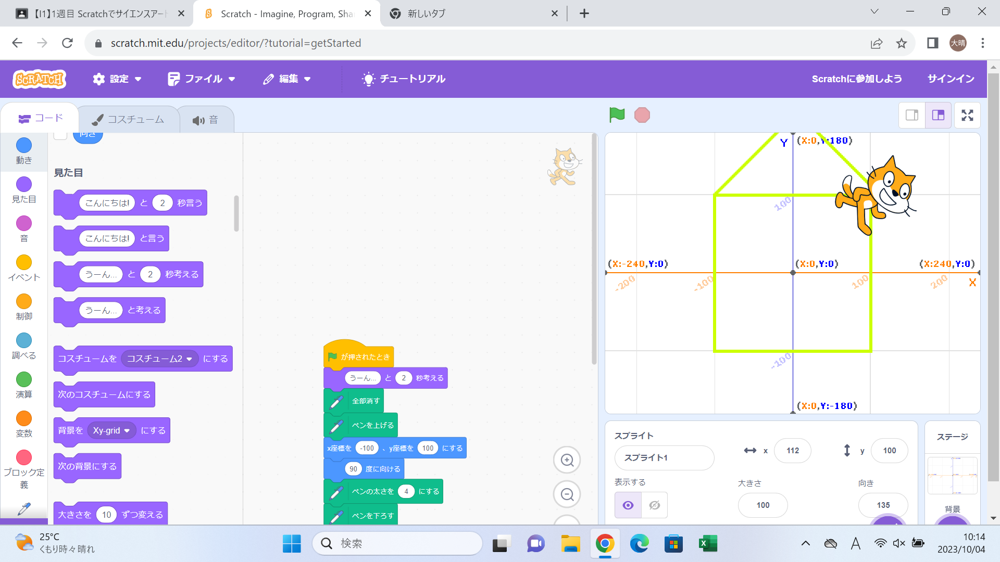
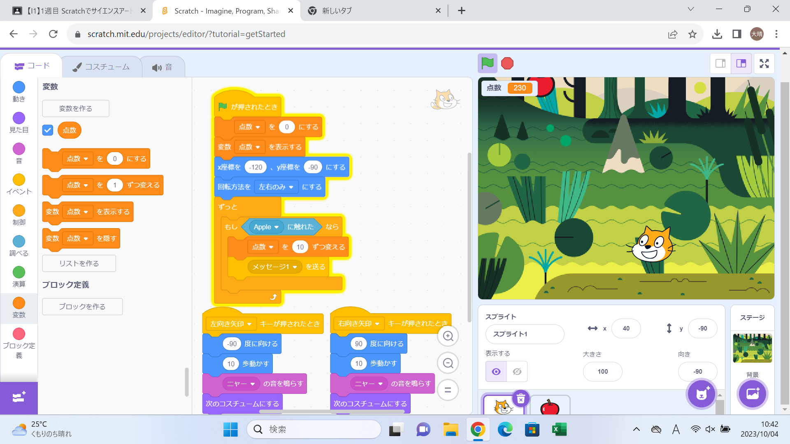

1週目のレポート ： 公大高専１年実習I-1
4b班40番 吉木大晴
第1週目
1-1 サイエンスアート

1.内容
スクラッチを使って線を書くプログラム作りを体験した。 まず動いているとわかりやすいように背景を変えた。次に猫が動くと動いたところに線を引くというプログラムを作った。 また、動き方によりかける図形が変わるので自由時間に角度や歩数を調整していろいろな図形を描いた。
2.感想
スクラッチは少しだけ触ったことがあったが実際にプログラムを組んだのは初めての経験で楽しかった。 円を描くというピログラムを作ろうと思っても結構いろいろなブロックが必要でネットに挙げられているようなものはこれ以上に大変なんだ、自分も一度こんなものを作ってみたいなと思った。
1-2 ゲーム

1.内容
猫とリンゴをプログラミングしゲームを作った。 まず猫が左右に動くプログラミングを行った。また回転方向を左右のみにしゲームらしい動きができるようにした。 次にリンゴのプロラミングを行った。リンゴは得点になるので当たったら消えるプログラミングや落ちてくるプログラミング、位置と速度を変化させるプログラミングを行った。 最後に点数をひょじさせるプログラミングを行い完成した。また、休み時間にジャンプや音のプログラミングを作ったりいじってみたりした。
2.感想
ゲームをやるというのはやったことがあったが自分で作ってみるのは初めての経験だったのでとても楽しかったし、また自分で作ってみたいなと思った。 今度はブロックプログラミングではなくプログラミング言語を作ったプログラミングに挑戦してみたい。
1-3 ホームページ作成
私のホームページ
1.内容
まずgithubにログインしアカウントを作成した。 次に土井先生のプログラミングをforkしホームページを作成した。その後その作ったホームページを編集して自分のプロフィールを作った。 最後にこのレポートの作成方法を教えていただいた。
2.感想
ホームページってよく見るがどのようにして作っているのかは知らなかったのでこんなに自分で作るのは大変なものなんだと思った。 ホームページを作るプログラムは初めて見たのでとても勉強になった。